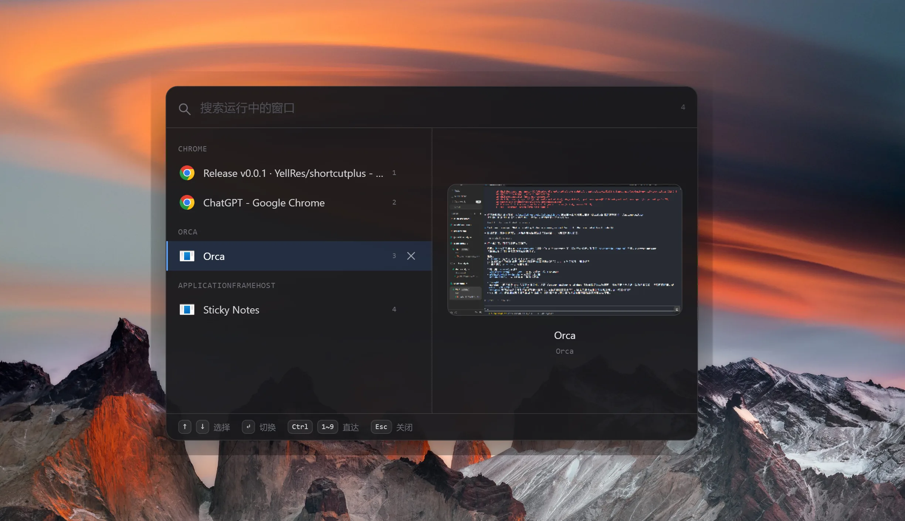

AltSwitch
一个快速、键盘优先的 Windows Alt+Tab 替代品——类 Spotlight 的命令面板：窗口按所属应用分组、输入即筛选、实时缩略图，↵ 一下瞬间切换。
00 · Gallery
界面一览
一块居中的命令面板浮层：左侧是按应用分组、可搜索的窗口列表，右侧是选中窗口的实时缩略图。

01 · Features
特性
-
命令面板 UICommand-palette switching
按下 Alt+4，居中浮层立即出现：输入即筛选，全程键盘操作，手不必离开主键区。再按一次或失焦即隐藏，不留痕迹。
-
按应用分组Grouped by process
窗口按所属进程分组，浏览器开一打窗口也一目了然；↑ ↓ 在扁平列表上跨组移动，Ctrl+1~9 数字键直达。
-
实时缩略图Live thumbnails
选中即预览窗口画面；最小化的窗口回退到「最后一帧」缓存，实在没有再显示应用图标——切换之前心里有数。
-
热键与自启Hotkey & auto-launch
默认 Alt+4，可在设置中换成任意组合键；支持开机自启动，平时安静常驻托盘，双击托盘图标也能唤起。
-
轻量原生层Native, but light
窗口枚举与切换通过 koffi 直调 Win32，预编译二进制开箱即用——安装不需要 Python，也不需要 Visual C++ 工具链。
02 · Principles
设计原则
-
一
键盘优先 从唤起、筛选到切换，手不用离开键盘；鼠标点击只是补充，不是前提。
-
二
即开即用 无注册、无引导页；便携版解压即用，不想安装就不装。
-
三
安静不打扰 无边框浮层失焦即隐藏，平时常驻托盘；没有广告，也没有遥测上报。
-
四
开源透明 源码完整公开在 GitHub，MIT 协议；行为可审计，问题可追溯。
03 · Pricing
价格
$0
同类商业 Alt+Tab 增强工具按许可证收费；AltSwitch 以 MIT 协议完全开源——没有广告、没有遥测、没有订阅。
下载 AltSwitch无需注册，下载即用；便携版解压即可运行。
支持 Windows 10 / 11 x64·提供 NSIS 安装程序与便携 zip 两种分发·也可以从源码自行构建
04 · FAQ
常见问题
- 默认快捷键是什么？可以改吗？
- 默认
Alt+4唤起，再按一次隐藏。可以在设置中改成任意组合键，改动即时生效；也可以顺手开启开机自启动。 - 和系统自带的 Alt+Tab 有什么区别？
- 系统 Alt+Tab 是一排平铺缩略图，靠反复按 Tab 定位；AltSwitch 是一块可搜索的命令面板——窗口按应用分组、输入即筛选、
Ctrl+1~9直达。打开的窗口越多，差距越明显。 - 最小化窗口的缩略图为什么不是实时的？
- 缩略图来自 Electron 的 desktopCapturer，被最小化或完全遮挡的窗口无法实时捕获。此时会回退显示该窗口的最后一帧缓存，实在没有再显示应用图标——这是已知取舍，不是 bug。
- 安装前需要先装 Python 或 Visual C++ 吗？
- 不需要。原生 Win32 调用通过
koffi完成，它自带预编译二进制，下载即用；从源码构建也只要pnpm install。 - 支持 macOS 或 Linux 吗？
- 目前仅支持 Windows 10 / 11 x64。macOS 版的跨平台重写在另行探索中，进展见 GitHub。
更多问题？欢迎到 GitHub Issues 提问。